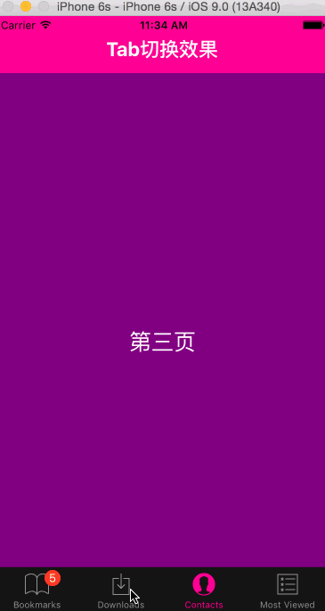

在目前市面上的APP中，大部分都是选项与选项之间的切换，比如：微信、微博、QQ空间……, 在iOS中，我们可以通过TabItem类进行实现。那么，在React Native中，我们应该怎么实现呢？

在React Native中可以通过TabBarIOS和TabBarIOS.Item组件来实现选项卡切换效果，大家可以看到后面带有IOS，所以这个组件是不支持Android的，当然后面我们可以自定义该组件。
TabBarIOS常见的属性
View的所有属性都可以被继承
barTintColor color 设置tab条的背景颜色
tintColor color 设置tab条上被选中图标的颜色
translucent bool 设置Tab栏是不是半透明的效果
TabBarIOS.Item常见的属性
badge number
在图标的右上方显示小红色气泡，显示信息
icon Image.propTypes.source
Tab按钮自定义的图标，如果systemicon属性被定义了，那么该属性会被忽略
onPress function
当Tab按钮被选中的时候进行回调，你可以设置selected={true}来设置组件被选中
selected bool
该属性标志子页面是否可见，如果是一个空白的内容页面，那么一定是忘记了选中任何的一个页面标签Tab
selectedIcon Image.propTypes.source
设置当Tab按钮被选中的时候显示的自定义图标，如果systemIcon属性被设置了，那么该属性会被忽略。如果定义了icon属性，但是当前的selectedIcon属性没有设置，那么该图标会被设置成蓝色
style
设置样式风格，继承View的样式各种风格
systemIcon
enum(‘bookmarks’,’contacts’,’downloads’,’favorites’,’featured’,’history’,’more’,’most-recent’,’most-viewed’,’recents’,’search’,’top-rated’)
系统预定义的图标，如果你使用这些图标，那么你上面设置的标题，选中的图标都会被这些系统图标所覆盖。
title string
在Tab按钮图标下面显示的标题信息，如果你设置了SystemIcon属性，那么该属性会被忽略
TabBarIOS.Item案例展示
代码截图如下:
案例效果展示:

(本文转载自旋之华微信公众号)